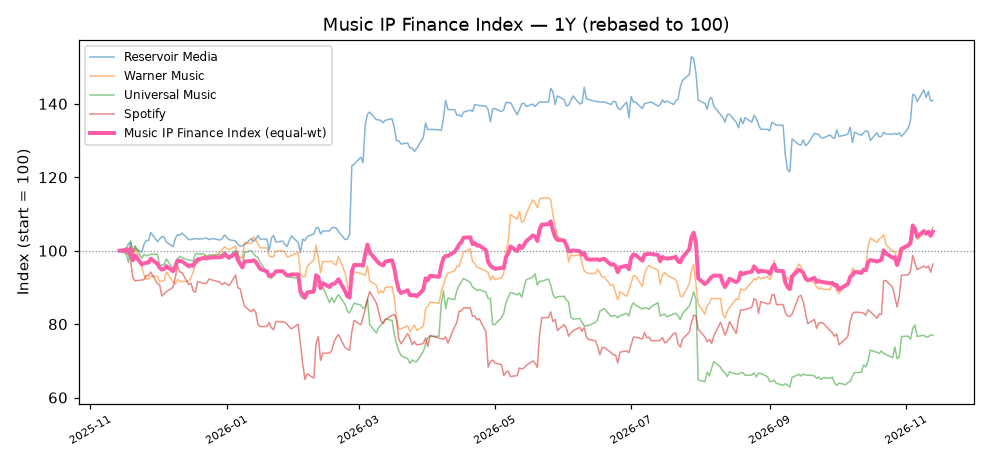

資料日期：2026-11-02 · 產生時間：2026-11-02 06:58 · 每日自動更新 · 🆕 = 近 7 天新資料
執行失敗：<urlopen error timed out>
A Houston businessman has been ordered to federal prison for conspiring to commit arson of a commercial building…
California doctor Violetta Mailyan was sentenced yesterday to 15 years in prison for using her medical practice to fraudulently bill Medicare more than $45 million for Botox injection services that were medically unneces…
An Indian national pleaded guilty today to a $227 million Medicare fraud scheme in which hundreds of thousands of Medicare beneficiaries’ personally identifiable information was purchased from a company based in Pakistan…
ALBANY, Ga. – A Thomasville, Georgia, man who directed a $115,000 check theft and forgery scheme in the region has been sentenced to federal prison. “Stealing checks and forging financial documents is not a victimless cr…
U.S. Attorney Jason A. Reding Quiñones for the Southern District of Florida today joined U.S. Department of Agriculture (USDA) Inspector General John Walk and federal, state, and local law enforcement partners to launch…
The Securities and Exchange Commission took another step forward today to assist broker-dealers and other market participants on the path to central clearing of U.S. Treasury securities by issuing exemptive relief relate…
The Securities and Exchange Commission today charged two foreign-operated, Colorado-incorporated entities, BG Wealth Sharing Ltd and DSJ Exchange Pty Ltd, for orchestrating a fraud scheme that used false SEC filings to b…
By Michael Borella – Grab a pencil. Now train a large language model. Not a big one, mind you. Let’s go small, something in the range of a few billion parameters, trained on a modest corpus of a trillion or so tokens. Co…
By Kevin E. Noonan – In many corners, Supreme Court Chief Justice John Roberts has come under criticism, justified or not, over the performance of the Court in the second Trump Administration. Last week, the Chief took s…
Monday's Federal Circuit patent arguments: IPR disclaimer, BRI in reexam, link aggregation, and eligibility for turbine and location claims. Continue reading this post on Patently-O.…
Prof Dennis Crouch introduces Building the Internet We Want, a new book on speech, privacy, AI, contracts and the laws shaping our digital lives. Continue reading this post on Patently-O.…
Eight en banc petitions are pending at the Federal Circuit, though two are pro se. Continue reading this post on Patently-O.…
距離上次10/14貼文"瀏覽次數達400萬人次"才16天，睡一覺起來就"看到500萬"，甚至都還在同一個月內。只是記錄一下歷史每個片段，但並不怎麼樣，因為這些都不是真實的瀏覽（可能600萬就不會記了），人多人少都會寫（只是擔心這個免費空間被取消），原本都只是自己的筆記，不小心產生了一些專業責任而已。補充，根據記錄，本blog從2008年開始，過了快10年到了2018年4月才達100萬瀏覽人次，現在一個月內就直接從400上到500。！！！…
MPEP 804..."There are generally two types of double patenting rejections. One is the "same invention" type double patenting rejection based on 35 U.S.C. 101 which states in the singular that an inventor "may obtain a pat…
By Michael Borella – Grab a pencil. Now train a large language model. Not a big one, mind you. Let’s go small, something in the range of a few billion parameters, trained on a modest corpus of a trillion or so tokens. Co…
First-action waits by technology family: about 34 months in bioinformatics, 12 in packaging, and 4 for Track One, with a full art unit table. Continue reading this post on Patently-O.…
Range of Motion's cert petition, due Dec. 21, will challenge the plainly dissimilar test and judicial functionality findings for design patents. Continue reading this post on Patently-O.…
This is a summary of developments in and around the UPC in the calendar week of October 26, 2026.…
The Walt Disney Company is on the receiving end of numerous video patent lawsuits in different jurisdictions. When it comes to its own IP, Disney enforces vigorously.…
Pfizer is in a strong position against Enanta in a Paxlovid-related patent case as the plaintiff will need to overcome both a UPC first-instance decision and an EPO preliminary opinion.…
The U.S. Court of Appeals for the Federal Circuit (CAFC) on Friday reversed a district court’s award of attorneys’ fees to Elysium Health, Inc., holding that the lower court erred in assessing the substantive strength of…
This week in Other Barks & Bites: the Federal Circuit reverses an exceptionality determination after finding that the patent owner raised Section 101 arguments requiring more than a simple application of Myriad; the Seve…
I will be taking a blogging break for the next week or so, as I travel to conferences in Macau and Hong Kong. I plan to resume sometime the week of November 9.…
China’s proposed patent screening for SME support builds on tighter eligibility rules and a broader drive to curb abnormal filings, improve patent quality, and encourage commercial use.…
A Rio de Janeiro judge ordered Hisense to stop using HEVC in TVs sold in Brazil, said its defense bordered on insulting the Court, and praised InterDigital’s technical, clear reply.…
My new article “Process Tracing China’s Pharmaceutical IP Reforms: Foreign Pressure, Domestic Innovation, and Institutional Change” is now available on SSRN at https://papers.ssrn.com/sol3/papers.cfm?abstract_id=7472640.…
Chen Fuli’s appointment as Party Secretary of CNIPA brings an experienced trade lawyer, diplomat and legislator into the agency’s top leadership as Shen Changyu prepares to move to WIPO. Chen previously served as China’s…
Join us on September 10 for a free, virtual Asia Society Northern California program, “Critical Minerals, Technology, and the Future of U.S.-China Competition,” featuring Walter Copan, Gloria Xiong, and Cory Combs. We wi…
On the 100th anniversary of my father Ronald Cohen’s birth, I look back at two public-health innovations he helped develop: a blocked-flue safety control designed to prevent carbon monoxide poisoning in New York City ten…
Why does China increasingly treat intellectual property as a strategic instrument of national development, international influence, and global governance while the United States often continues to view it primarily throu…
National Radio and Television Administration General Office Guang Dian Ban Fa (2021) 267 All provincial, autonomous region and municipal radio and television bureaus, the Xinjiang Production-Construction Corps Culture, S…
All provincial, autonomous region and municipal Party Committee cybersecurity and informatization offices, the Xinjiang Production-Construction Corps Party Committee Cybersecurity and Informatization Office” Since the “C…
YBJBF No. (2021)24 All banking supervisory bureaus, all large-scale banks, shareholding-type banks and foreign invested banks: In order to promote commercial banks to effectively implement the “Provisional Rules for the…

| 標的 | 價格 | 近1年 |
|---|---|---|
| Reservoir Media RSVR | 9.52 | +25.3% |
| Warner Music WMG | 30.62 | -4.2% |
| Universal Music UMG.AS | 17.08 | -26.6% |
| Spotify SPOT | 593.44 | -9.4% |
| 音樂 IP 金融指數 INDEX | — | -3.7% |
Ownership of non-fungible tokens (NFTs) associated with cinematograph films is advertised, whereas Indian copyright law makes any transfer of a right in a film by way of assignment or licence possible only if it complies…
Protecting and utilizing intellectual property (IP) are strategic aspects of the creative economy, yet the sector faces challenges in transparency, data security, and governance efficiency. Blockchain technology—characte…
Generative AI is shifting digital rights management from access control to managing an ongoing rights relationship across training, inference, and output. Addressing linked challenges in provenance, identification, attri…
The rapid development of Generative Artificial Intelligence (GenAI) has gradually intensified the debate around the lawful use of copyrighted works during the training phase of AI models. GenAI works by processing a larg…
The intellectual property sector is undergoing through significant changes due to the rapid growth in the technology.This paper traces the history of the intellectual property with national and international frameworks f…
The emergence of artificial intelligence as a creative force has fundamentally challenged traditional conceptions of authorship, creativity, and intellectual property ownership. This analysis presents six novel theoretic…
Objective: This article presents a comparative legal analysis of NFT regulation in the Russian Federation, the Republic of Uzbekistan, and the United States of America, three jurisdictions that have adopted markedly diff…
The traditional knowledge held by indigenous communities in Indonesia faces new threats with the development of the digital economy, ranging from data mining by generative artificial intelligence to the tokenization of n…
今日無新項目
Federated Learning (FL) reduces direct exposure of sensitive clinical data, but decentralized healthcare deployments remain vulnerable to Byzantine and data-poisoning attacks and are complicated by non-independent and id…
Abstract When is it cheaper to coordinate production inside a hierarchical firm rather than across an open market? As per the classical theory of the firm developed by Coase and Williamson, hierarchy wins in a low-trust,…
This study explores how smart contract based data strategies can support startup growth in digital business systems characterized by competition, limited resources, and increasing demand for transparency. In the context…
Blokzincir ve kripto varlıklar, klasik hukuk kategorileriyle kolaylıkla açıklanamayan, bu alanda düzenleme yapılması isteniyor ise blokzincirin teknik yapısı nedeniyle çok katmanlı bir düzenleme yapılmasını gerektiren bi…
The persistent limitations of representational governance have renewed inter-est in institutional forms that enable more direct participation in local decision-making.This paper examines how blockchain-based governance a…
The article discusses the development of the financial market in the context of a possible convergence of decentralized finance and the traditional financial system. As an object of research, the authors chose the produc…
今日無新項目